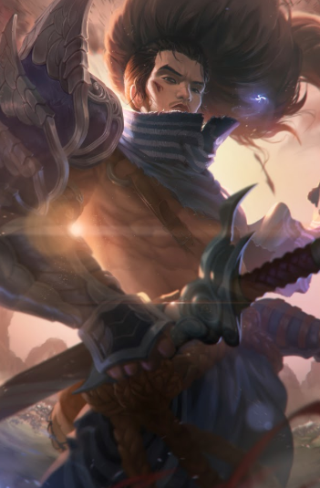
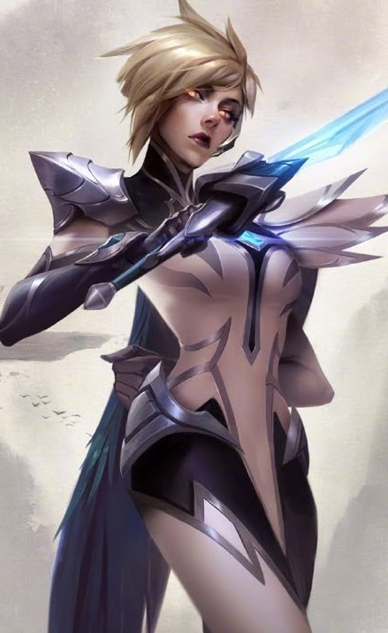

겜공페
(게임공략페이지)
 
패치노트
다이애나
●Q-초승달 검기 사용 편의성이 강화됩니다.
●월광 소나타: Q - 초승달 검기가 마우스 커서 방향으로 더 정확히 발사됩니다.
●달의 끝자락: 다이애나의 Q - 초승달 검기 끝부분이 잠시동안 전장의 안개를 밝혀줍니다.
●불시착: Q - 초승달 검기가 조금 더 빨리 이동합니다.
사일러스
●기본 공격력, 체력 증가량이 늘어납니다.
●W - 국왕시해자 기본 피해량이 증가합니다. (60/90/120/150/180 ⇒ 65/100/135/170/205)
●E - 도주/억압 (버그 수정: 툴팁에 스킬 레벨에 따른 마나 수치 정보가 전부 제대로 표시됩니다.)
 일라오이
일라오이●W - 혹독한 가르침 (신규최소 피해량: 20/30/40/50/60)
●E - 영혼의 시험 (기본 영혼 지속시간: 10초 ⇒ 7초)
●R - 믿음의 도약 (최대 소환 가능한 촉수 숫자: 5 ⇒ 6)
●W - 혹독한 가르침으로 후려치기 공격 명령을 받았을 때 공격 중에 사라지지 않습니다.
파이크
●Q - 뼈 작살 (재사용 대기시간: 14/12.5/11/9.5/8초 ⇒ 12/11/10/9/8초)
●W - 유령 잠수 (이동 속도: 40% (5초에 걸쳐 원래대로 돌아옵니다.) ⇒ 40/45/50/55/60% (5초에 걸쳐 원래대로 돌아옵니다.))
●E - 망자의 물살이 챔피언이 아닌 대상에게 피해를 입히지 않습니다.)